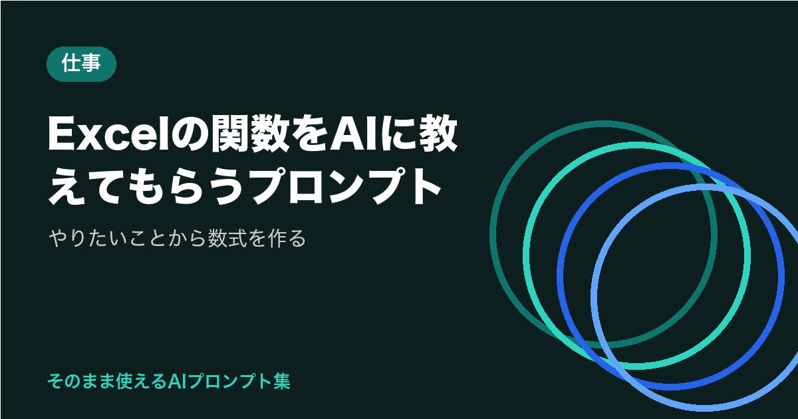

Excelの関数をAIに教えてもらうプロンプト｜やりたいことから数式を作る

Excelで「こういう集計がしたいけれど、どの関数を使えばいいのか分からない」と悩むことはありませんか。
AIに表の形とやりたいことを伝えれば、使える関数や数式の例を教えてもらえます。
この記事では、ChatGPT・Claude・Geminiなどで使える、Excelの関数を教えてもらうためのプロンプトを紹介します。
AIに伝えるべき3つの情報
Excelの数式は、表のどの列にどんなデータが入っているかによって書き方が変わります。そのため、AIに質問するときは次の3つを伝えることが大切です。
| 伝える情報 | 例 |
|---|---|
| 表の構成 | A列に日付、B列に担当者名、C列に売上金額。1行目は見出し |
| やりたいこと | 担当者ごとの売上の合計を出したい |
| 環境 | 使っているExcelのバージョンや、Googleスプレッドシートかどうか |
特に環境は見落としがちです。比較的新しい関数の中には、Excelのバージョンによっては使えないものがあります（執筆時点）。使っている環境が分からない場合は、「古いバージョンでも使える方法も教えてください」と付け加えておくと安心です。
やりたいことから数式を作ってもらうプロンプト
まずは基本形です。【 】を自分の表に合わせて書き換えてください。
使っている環境：【例：Microsoft 365のExcel／バージョン不明】
表の構成：【例：A列に日付、B列に担当者名、C列に売上金額。データは2行目から100行目まで。1行目は見出し】
やりたいこと：【例：E2セルに入力した担当者名の売上合計をF2セルに表示したい】
条件：
1. 入力する数式をそのまま示す
2. 数式の各部分が何をしているかを、初心者にも分かるように説明する
3. 別の書き方があれば、もう1つ紹介する
4. よくある間違いや注意点があれば教えてください
数式の説明もあわせて頼むのがポイントです。仕組みが分かれば、次に似た集計をするときに自分で応用しやすくなります。
エラーや思いどおりにならない数式を直してもらう
数式がエラーになったり、思った結果にならなかったりするときは、数式と状況をそのまま伝えて原因を聞きましょう。
入力した数式：【ここに数式を貼り付け】
表示された結果：【例：#N/A と表示される／0になる】
期待していた結果：【例：商品コードに対応する商品名を表示したい】
表の構成：【例：商品一覧はSheet2のA列にコード、B列に商品名】
原因として考えられるものを複数挙げてもらい、一つずつ確かめていくと、解決までの近道になります。数字が文字列として入っている、余分なスペースが含まれている、といった原因はよくあるため、AIに「確認すべき点をチェックリストにしてください」と頼むのも便利です。
数式の意味を解説してもらう
前任者から引き継いだファイルなどで、複雑な数式の意味が分からないこともあります。
数式：【ここに数式を貼り付け】
説明は、内側の関数から順に、1つずつ日本語で書いてください。最後に、数式全体がしていることを1文でまとめてください。
よく使う作業を関数で効率化できるか聞く
毎回手作業でしている作業がある場合は、「関数で楽にできないか」を相談するのも一つの方法です。
作業内容：【例：シートの中から特定の担当者の行を探して、別のシートに書き写している】
表の構成：【例：A列に日付、B列に担当者名、C列に件名】
関数だけでなく、並べ替えやフィルター、ピボットテーブルなどの機能を提案されることもあります。提案された方法の名前が分かれば、Excelのヘルプや解説書で調べ直すこともできます。
数式だけを貼り付ければ、データそのものをAIに渡す必要はありません。顧客名や売上の実データ、社員の個人情報などが含まれる表は、そのまま貼り付けないようにしましょう。どうしても例が必要な場合は、架空のデータを数行作って伝えれば十分です。入力内容の扱いはサービスや設定によって異なります（執筆時点）。
うまくいかないときの直し方
AIが教えてくれた数式がうまく動かないときは、次のように追加で伝えてみてください。
- 関数が使えないと表示される：「この関数が使えない環境です。古いバージョンでも使える方法を教えてください」と伝える
- セルの位置がずれている：表の構成を改めて正確に書き、「見出しは1行目、データは2行目から」と行の位置もはっきり伝える
- 説明が難しい：「関数を初めて使う人向けに、例を使って説明してください」とレベルを下げてもらう
- 数式が長すぎる：「作業用の列を使ってもいいので、分かりやすい数式に分けてください」と頼む
- 結果が正しいか不安：「この数式が正しく動いているか確かめる方法を教えてください」と聞く
AIが示す数式は、正しく見えても間違っていることがあります。いきなり本番のファイルで使うのではなく、コピーしたファイルや少ないデータで試し、手計算や電卓で結果を確かめてから使うようにしましょう。
関数の考え方そのものを基礎から学び直したい方は、苦手な分野を学ぶための質問プロンプトの方法も役立ちます。
まとめ
Excelの関数をAIに教えてもらうときは、表の構成・やりたいこと・環境の3つを具体的に伝えることがポイントです。
- やりたいことを伝えて、数式とその説明をセットで教えてもらう
- エラーのときは、数式・結果・期待した結果・表の構成を伝えて原因を聞く
- 実データは貼り付けず、数式はコピーしたファイルで試して結果を確かめる
関数の名前を知らなくても、やりたいことを言葉で伝えれば手がかりが得られます。日々の集計作業に、ぜひ取り入れてみてください。
気になったプロンプトを1つコピーして、今日の用事で1回だけ試してみませんか。空欄を埋めて送るだけで始められます。
あなたなら、何をAIに頼んでみますか？
最後まで読んでくださり、ありがとうございました。